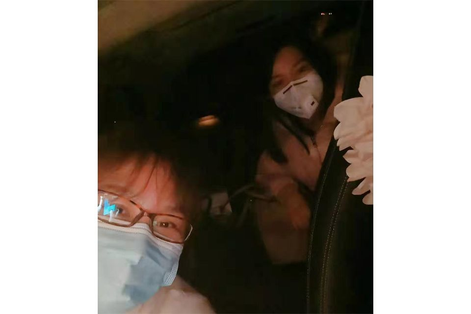

武汉网约车司机自述：“恨不得奉献出自己的每一分每一秒”
原文链接 备份链接 27.01.2020本文字数：1459，阅读时长大约2.5分钟 导读：“我生活在武汉，我热爱武汉。只有城市健康了，我们居民才会有舒适的小日子。” 作者 | 第一财经 刘佳 清晨6点的武汉，天还没亮，身穿黄色防护服、戴 …

*************▲************* 一名志愿车队司机和坐车的医护人员合影。 （受访者供图/图）
全文共*3020*字，阅读大约需要8分钟。
看着后视镜里，这个女医生崩溃得痛哭流涕，李小熊强压悲伤，陪着她小声啜泣，不知道该如何安慰，只能反复说“有希望的”。
家里就剩下一个N95口罩。老伴把口罩让给了刘筱，自己把两个普通口罩叠在一起戴上了。没有防护服，两人就穿上了雨衣。没有护目镜，刘筱就戴上了儿子的摩托车防风镜。
一位医护人员说，医用口罩在“超负荷”使用，从4个小时一换，到一个口罩用一整天，甚至到了用酒精消毒反复使用的程度。
本文首发于南方周末 未经授权 不得转载
文 | 南方周末记者 贺佳雯
责任编辑 | 何海宁
除夕夜的钟声刚过，90后武汉市民李小熊驾车赶到武汉大学中南医院，有一位医生在等着回家。
这是那天李小熊最后一名乘客：一位戴着蓝色医用口罩的女医生，面容有些憔悴。一见面，医生就向李小熊连声道谢。
上车不久，李小熊突然听到后座传来哭声。不是小声啜泣，而是嚎啕大哭。“每当一个人确诊感染，我去通知他的时候，我明明知道医治困难，还要安慰他马上就会好的。”医生哭道，“感觉自己说的都不相信，真的受不了了。”
看着后视镜里，一个成年人崩溃得痛哭流涕，李小熊强压悲伤，陪着她小声啜泣，不知道该如何安慰，只能反复说“有希望的”。
新年初一，李小熊在电话里向南方周末记者回忆那一幕时，忍不住又哭了起来。
这是大疫情里的两个特殊群体，乘客是奋战一线的医护人员，司机是武汉市民组成的志愿者，因为看不见的情感连结，坐到了同一辆车上。
1
李小熊是这支特殊车队的发起者之一。据报名数据统计，有超过四千名像她这样的武汉市民，从1月24日大年三十起，自发组成了一个医疗支援志愿车队，接送医护人员上下班。
此前一天，1月23日10时起，因遏制新型冠状病毒肺炎疫情需要，武汉全市的城市公交、地铁、轮渡、长途客车暂停运营。同时，1月24日12时起，武汉全市网约出租车停止运营，巡游出租车实行单双号限行。
一时间，医护人员上下班的交通出行受到限制。
一位医护人员电话告诉南方周末记者，他的同事只能靠步行或是骑共享单车上下班。有些同事住得远，干脆就睡在了医院。值班室床位不够，就睡在地上、趴在桌上。
李小熊从事医疗整形行业。“同行不断在各种微信群里求车，有的医生无奈之下甚至打电话给110，但这么多人警察也管不过来啊。”
于是，李小熊和武汉慈善总会善缘义助基金执行秘书长张小艳商量着，通过各种微信群、朋友圈发起组建爱心接送车队的倡议。
倡议一发出，就有不少车主自发加入车队。截至25日19时许，已经有超过四千名车主报名，有760辆志愿车正在接送医护人员。
这支特别的车队中，车主来自各行各业，年龄从二十来岁到五六十岁，只要有驾照、能开车，就能加群报名。“我在这（武汉）生活，总得做点什么。”这是受访车主讲得最多的一句话。
车主按区域安排了车队分工，主要分汉口、武昌、洪山、青山、汉阳、光谷等片区，分别对应建立了微信群。南方周末记者在25日加入“武昌群”里时，短短一小时内，陆陆续续就有十几位志愿车主加入。医护人员把出行用车需求发到群里，车主也将行程发到群里，以便能顺路载上更多人。
不过，仅仅在车队组建的第二天，1月25日下午，武汉市新型肺炎防控指挥部发出通告，从1月26日零时开始，除经许可的保供运输车、免费交通车、公务用车外，中心城区区域机动车禁行。
通告发布后，小熊发了一条朋友圈，称车队26日起不能接送医护人员。“一个是因为机动车禁行通知，一个是因为爱心车主没有足够的防护服等装备，很不安全。”
2
车队司机的防护装备确实远远不够。
大年初一早上六点多，天幕仍是一片漆黑。刘筱和老伴就开始驾车接送医护人员。刘筱已经58岁了，本职工作也是一家口腔医院的医护人员，还在上班。武汉“封城”后，儿子没能回家过年。
刘筱和老伴一合计，与其在家闲着，不如“共克时艰”。
出门前，家里就剩下一个N95口罩。老伴把口罩让给了刘筱，自己把两个普通口罩叠在一起戴上了。没有防护服，两人就穿上了雨衣。没有护目镜，刘筱就戴上了儿子的摩托车防风镜。
刘筱的儿子特别支持二老的义举，还把这一消息告诉同学、朋友，同学的父亲也争相加入车队。
此前一天，刘筱接第一位医护人员时，考虑到很多人要坐车，踌躇了半晌，开口想要一些酒精，消毒车把手和座椅。那名医护人员转身就给刘筱拿去了。但只拿出不到30ml的一小瓶酒精。“那已经非常金贵了！”刘筱很是感动。
肿瘤科医生尹强，初一一早接到医院紧急呼叫，急着赶回医院为病人检查。抱着试试看的心态，他在车队群里发出求助信息。
很快得到刘筱二老的回应。
在车上，尹强给刘筱夫妇讲解了家庭防护的注意事项，叮嘱二老在家用84消毒液消毒。但刘筱现在武汉已经买不到84消毒液了，尹强主动说，下班二老再来接他时，给二老带一些。
这是一批特殊的乘客。也有医护人员向志愿司机诉说现在医患的误解，一些症状轻微的疑似感染病例迟迟得不到检测确诊。一位身处武汉市定点医院的医护人员电话告诉南方周末记者，医院目前确实没有那么多的试剂盒用于检测。医用口罩也在“超负荷”使用，从4个小时一换，到一个口罩用一整天，甚至到了用酒精消毒反复使用的程度。
这位医护人员在SARS时期抗战在一线，如今年纪大了退居二线。她感觉这次应对准备不太充分，一方面体现在疫情出现时没有重视，另一方面在于疫情暴发之后，对医务人员后勤保障工作滞后。
3
实际上，李小熊“不能接送”的朋友圈信息发出之后，聚拢一起的车主并未离去。
“解散不是一个人说了算的，我们都是自发的。只要不被拦，我们做好防护就上（路）。”一位车主告诉南方周末记者，禁行令对配戴医护人员胸牌的车主没有限制。他刚好从事医疗工作，不在抗击肺炎治疗的一线，就利用休息时间接送其他医护人员。
截至26日12时许，南方周末记者了解到，仍然有不少车主还在接送医护人员。
事实上，湖北省公安厅已在24日下发紧急通知，省公安厅、各地公安机关要建立应急物资、专业医护人员运输保障工作机制，明确专人负责对接协调。
机动车禁行令下达之后，武汉大学中南医院和武汉第四医院宣传处相关工作人员接受媒体采访表示，目前医院已经为一线医务工作者安排了通勤班车，会按时间和路线进行接送。
在向武汉有关部门报备后，滴滴称组建了“医护保障车队”。在媒体披露的新闻照片中，首批100名司机穿戴着防护服、口罩等，装备消毒液，从25日凌晨开始免费提供服务。据悉，滴滴还在召集更多的网约车司机投入服务。
不过，李小熊和志愿车主们认为，这远远不够。李小熊在和武汉公安部门和红十字会积极沟通，试图通过给志愿车主增加防护服等装备，同时争取让原车队纳入政府统一保障机制之下，继续为医护人员提供接送服务。
1月26日，李小熊告诉南方周末记者：“我们还在”，他们正在统一发放防护服，没穿防护服的不能上路。
刘筱的儿子十分挂念着父母健康，特意让在武汉医院工作的同学帮忙给二老带两只N95口罩。但1月25日晚上十点左右，接送停止了，刘筱也没去拿口罩，觉得口罩应该留给医生，“他们在一线，我们可以不乱跑”。
尹强原本约好了25日下午五点由刘筱夫妇接送，但考虑到二老的安全婉拒了，自己骑了一个多小时共享单车回了家。但他跟南方周末记者念叨：“我好不容易搞了点消毒液没来得及送。”
1月25日晚上11点半，张小艳还在武东高速口等一名从湖北省阳新县返回的医生。她说不知道明天能不能接送，“能接一个是一个”。
（刘筱、尹强为化名）

征集

《南方周末》现向所有身处新冠肺炎一线的读者公开征集新闻线索。我们欢迎武汉及周边城市医患联系记者，提供防疫前线的一手资讯，讲述您的新春疫情见闻。若您不在武汉，但您身处之所也有与疫情相关的重要新闻线索，亦欢迎您与我们分享。疫情仍在蔓延，南方周末将执笔记录每位国人在疫情面前的希望与困境，与广大读者共同面对疫情。祝愿所有读者朋友们，新春平安。线索可直接给本篇文章留言，格式为：【线索】+内容+您的电话（绝对会对您的个人信息保密）


原文链接 备份链接 27.01.2020本文字数：1459，阅读时长大约2.5分钟 导读：“我生活在武汉，我热爱武汉。只有城市健康了，我们居民才会有舒适的小日子。” 作者 | 第一财经 刘佳 清晨6点的武汉，天还没亮，身穿黄色防护服、戴 …
原文链接 备份链接 受到武汉新发布限行令的影响，也出于对车主健康的担忧，善缘车队停止接送医护人员。26日上午，在一些武汉本地的互助群里，提供免费住宿或为医生送餐的武汉市民们还在热议：目前我们还没收到通知，是不是还可以自发去接送医生？ 本 …
原文链接 备份链接 医疗防护资源不足是常态，各地资源调配需平衡，“灯下黑”区域渐次光亮，但少数地区的疫情宣传依旧不到位 外地务工返乡者最担忧的问题是年后经济收入断流、地域歧视，担心节后可能无法返工 本文首发于南方人物周刊 文 | 本刊记 …
原文链接 备份链接 各方资源和关注的焦点是武汉，但在周边16座也因疫情而被封闭的城市里，他们正在经历着什么 文 |《财经》记者 房宫一柳 宋玮 黎诗韵 管艺雯 陈晶 余洋洋 实习生 马可欣 张凡 编辑 | 宋玮 1月24日，农历鼠年除夕 …
原文链接 备份链接 *************▲************* 大批量新国标标准的口罩正进入嘉兴“心脏仓” 。 （新华社/阿里巴巴供图/图） 全文共*4420*字，阅读大约需要*10*分钟。 “缺口以万为单位”，武汉市汉口医 …